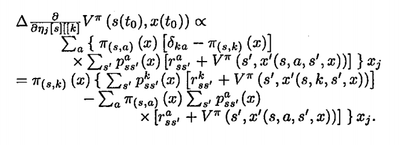
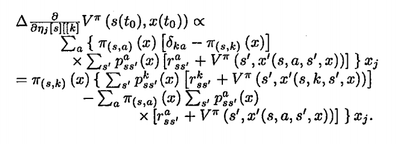

|


 

(Mostly Reinforcement Learning Theory)
- Y Niv, MO Duff & P Dayan (2005) - Dopamine, Uncertainty and TD Learning - Behavioral and Brain Functions 1:6 (4 May 2005), doi:10.1186/1744-9081-1-6.
- Duff, Chudova, Wold, Smyth, & Mjolsness. Statistical inference of biologically-plausible dynamic regulatory networks with core-leaf topology, ICSB, 2005.
- Duff, M. Design for an optimal probe. Proceedings of the 20th International Conference on Machine Learning, 2003: 131-138.
- Duff, M. Diffusion approximation for Bayesian Markov chains. Proceedings of the 20th International Conference on Machine Learning, 2003: 139-146.
- Duff, M.
Optimal Learning: Computational procedures for Bayes-adaptive Markov decision processes. Ph.D. Thesis, Dept. of Computer Science, Univ. of Massachusetts, Amherst, 2002.
- Duff, M. & Barto, A. Local bandit approximation for optimal learning problems. Advances in Neural Information Processing Systems 9. 1997: 1019-1025.
- Duff, M. Q-learning for bandit problems. Proceedings of the 12th International Conference on Machine Learning, 1995: 209-217.
- Bradke, S. & Duff, M. Reinforcement learning methods for continuous-time Markov decision processes. Advances in Neural Information Processing Systems 7. 1995: 393-400.
- Duff, M. Solving Bellman's equation by the method of continuation. Proceedings of the American Control Conference, 1994.: 2671-2682.
- Barto A. & Duff, M. Monte-Carlo matrix inversion and reinforcement learning. Advances in Neural Information Processing Systems, vol 6 1994: 687-694.
- Duff, M. Backpropagation and Bach's 5th cello suite (Sarabande). Proceedings of the International Joint Conference on Neural Networks.
- Szilagyi, M., Duff, M., & Yakowitz, S. Procedure for electron and ion lens optimization. Applied Physics Letters.
My Erdos number is 3.
|
|